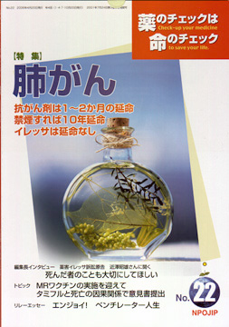

No.22 特集 肺がん 2006年4月 発行
肺がんによる死亡は胃がんを超して、部位別がんのトップです。最近では年に５、６万人が肺がんで死亡しているという、非常に社会的にもインパクトの強い疾患です。また、新しい抗がん剤としてイレッサ等も出ており、それに対して薬のチェック（NPOJIP）でも厚生労働省に対して要望書を出すなどの活動をしています。
今回の特集は、2004年11月に開催した第4回医薬ビジランスセミナー報告の最終です。分科会F2「肺がんの予防と治療のEBM」では、大阪府立成人病センター調査部長大島明さんに主に「肺がんの予防」についてお話いただきましたが、特集するに際して「タバコ関連疾患の予防」など大幅に加筆していただきました。
次いで、浜六郎さんより治療について主にイレッサを中心に加筆しまとめていただきました。
もくじ
特集
■肺がんの予防とタバコ関連疾患の予防
■肺がんの治療、とくにイレッサを中心に
■薬の説明書（NPOJIPの判定付き）
・ゲムシタビン
・ドセタキセル
・シスプラチン
■編集長インタビュー
薬害イレッサ原告 近澤昭雄さんに聞く
「死んだ者のことも大切にしてほしい」
提言
■NPOJIPの提言
メーカー・国・学者は、過去の薬害で犯した過ちを繰り返すな
連載
■みんなのやさしい生命倫理 ２２
EBMの生命倫理（１）
■EBM超入門（11）
診療ガイドラインとEBM（１）
■リレーエッセイ エンジョイ!! ベンチレーター人生
■映画のなかのクスリ（15） ニコチン
■市民の視点 中医協改革
まず医療費の明細書を患者に発行してほしい
■行ってきました その１
インフルエンザ対策の大まちがい!
■行ってきました その２
集団フッ素洗口を考える公開討論会
■行ってきました その３
「ビッグファーマ」邦訳刊行記念シンポジウム
トピック
■１ MRワクチンの実施を迎えて
■２ タミフルと死亡の因果関係で意見書提出
質問箱
■１ 常用量の計算は？
■２ パーキンソン病で便秘に悩んでいます
■読者の声
・子育てに役立てています
・薬に頼らずに受験しました
・インフルエンザに関する記事がよかった など
■書評
・『世界ブランド企業黒書 人と地球を食い物にする多国籍企業』
・『ビッグ・ファーマ 製薬会社の真実』
■編集後記
編集長インタビュー より
薬害イレッサ原告 近澤昭雄さんに聞く 「死んだ者のことも大切にしほしい」
近澤さんは、2002年10月16日に、次女の三津子さん（当時30歳）を抗がん剤イレッサの副作用による間質性肺炎で亡くされました。イレッサが間質性肺炎を起こすという情報が公表された翌日のことです。現在、イレッサを承認した国およびイレッサを製造販売したアストラゼネカ社を相手に裁判をしておられますが、抗がん剤の承認や使用を論点とする裁判は、日本で初めてのことです。
非常なエネルギーを要する裁判にあえて踏み切った近澤さんに、三津子さんの発病や治療、イレッサについてお話を伺いました。
（以下、引用省略）
詳しくは本誌で。